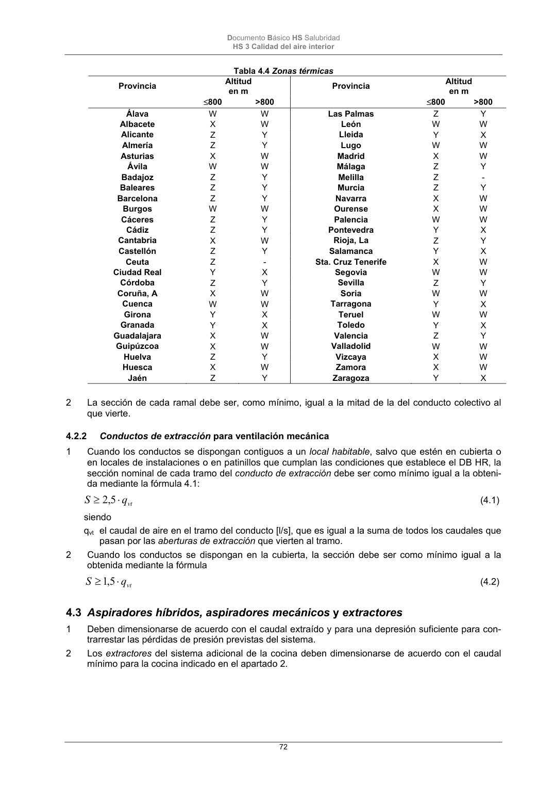

DB-HS · 4.3 Aspiradores híbridos, aspiradores mecánicos y extractores · versión 2022-06-14 · capa oficial
Formatos: JSON compacto · Markdown · PDF fuente
Ámbito del documento · texto del ámbito · documento y tablas
ID técnico a0152 · PDF pág. 72-73 · jerarquía no validada por persona · contrastado con el literal de la página 72 (candidato tipográfico); no validado por persona · padre: a0139
4.3 Aspiradores híbridos, aspiradores mecánicos y extractores 1 Deben dimensionarse de acuerdo con el caudal extraído y para una depresión suficiente para con- trarrestar las pérdidas de presión previstas del sistema. 2 Los extractores del sistema adicional de la cocina deben dimensionarse de acuerdo con el caudal mínimo para la cocina indicado en el apartado 2. Documento Básico HS Salubridad HS 3 Calidad del aire interior 73

PDF fuente redistribuible: copia fiel enlazada en esta página (SHA256 verificado).